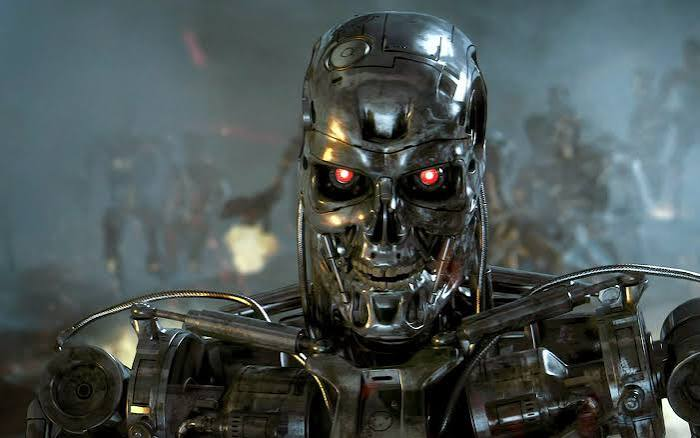
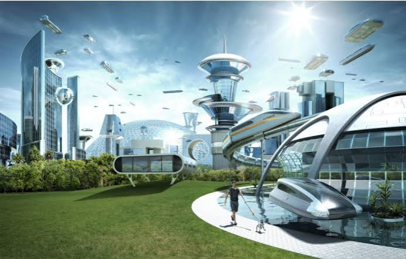

DYSTOPIA OR UTOPIA?
The power of AI could reshape the future
Be afraid, or embrace it? AI has the power of reshaping our world, but it not necessarily means it will be for the better.
The dystopia scenario
We've all seen those post apocalyptic movies and we all associate them with AI, and for a good reason. But do we really risk such a terrible future?

Worry not, AI is not conscious, nor does it feel emotions like we do, one more reason for it not to crave our demise. So, we can safely say that our future is not in the hands of AI, but in those of us humans. The problem only arises when we, humans, give free roam to AI while foolishly turning our backs.
Firstly, let's mention the possibility of monopoly and unfairness. AI is just another tool which the rich can use to get even richer; the problem is that it comes at the expenses of many hard working humans. With time, it's not unrealistic to believe that the economy will be in the hands of few.
Let's then get into more tangible topics: war and machines. Think about all the drones that AI gets to control: we humans have full control over how it acts, but nobody garauntees that no human will try to set one loose.
The utopia scenario
Many people also speculate an utopia that will be achieved once AI will be able to take care of all the work for us, so that we have to worry about nothing.

Are we close to achieving this "utopia"? Sadly, no, at least for quite a while. There are many challenges that make this dream hard to come true. Starting from unsustainable energy expenses that would always be required to keep it running and the currently incompatible economic model we have adopted, a similar world would require our society to change in its very roots in a much more unified way. Moreover, even if we had the power to achieve something like this, it hardly will happen without someone trying to take advantage of it rather than applying it for good.
Overall, it is still a far dream. Still, it is not impossible and with the improvement of technology from a societal standpoint, which could open a path to an actual almost-utopia.
From a more human perspective, let's take into consideration that not every human would love such a world the same way. Work and struggle have been a fundamental part of our existence for millennia, would we still be the same after removing them?
The verdict
Both scenarios hardly will happen, but both have a chance to. The good thing is that this choice is not in the hands of AI, but of us, humans. It is a highly controllable future, but a race to a still uncontrollable super technology is surely not the way to do so. Nonetheless, the result will not be black or white, and AI is here to stay, one way or another.